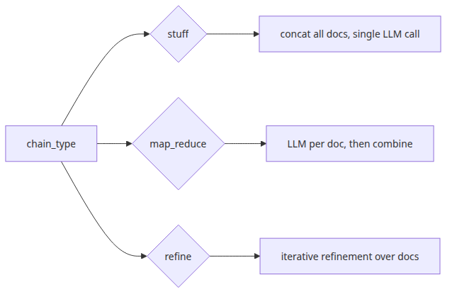
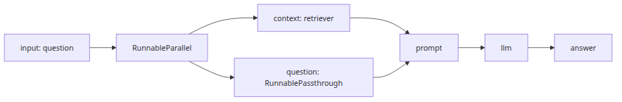
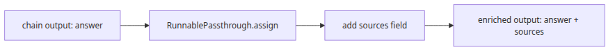

RAG Deep Dive series (5/6)
All code citations in this post are pinned to langchain-ai/langchain @ langchain==0.2.17.
Episodes 1 through 4 pulled the RAG stack apart layer by layer. We looked at document loading and chunking, embeddings and vector indexes, retriever policy, and the prompt layer that turns retrieved documents into model-visible context. Now comes assembly. In a real application, one user question should trigger retrieval, context construction, model invocation, and output parsing as one execution graph.
LangChain 0.2.x gives you two different ways to assemble that graph. The older path is RetrievalQA, a classic chain abstraction that wraps the whole pipeline behind a small interface. The newer path is LCEL, where you compose runnable objects directly with the pipe operator: retriever | prompt | llm | parser. Both solve the same problem, but they make very different tradeoffs around visibility, output shape, streaming, and control over intermediate results.
This episode traces both paths from the source. We will first walk through RetrievalQA.from_chain_type() and see what chain_type actually chooses. Then we will switch to LCEL and inspect what Runnable.__or__() builds, how invoke(), stream(), and batch() relate to the runnable protocol, and how schema reflection comes along for free. After that, we will break down the canonical LCEL RAG pattern step by step, then use RunnablePassthrough.assign() to return both answers and sources from one chain invocation.
RetrievalQA API: what from_chain_type() actually selectsThe first file to read is langchain/chains/retrieval_qa/base.py. BaseRetrievalQA holds four pieces of state that define the public surface: combine_documents_chain, input_key, output_key, and return_source_documents. The defaults are input_key="query" and output_key="result", so the classic call shape is qa.invoke({"query": "..."}), returning {"result": "..."}. If return_source_documents=True, the output_keys property appends "source_documents", which changes the output contract to {"result": "...", "source_documents": [...]}.

The popular constructor was from_chain_type(). Its implementation is intentionally small. It takes an LLM, a chain_type, optional chain_type_kwargs, calls load_qa_chain(llm, chain_type=chain_type, **kwargs), and stores the returned combine-documents chain in combine_documents_chain. In other words, RetrievalQA does not itself implement stuffing, map-reduce, or refinement. It delegates document combination to a separate factory and acts as the glue between retriever output and that factory-produced answer chain.
The real dispatch lives in langchain/chains/question_answering/chain.py. In 0.2.17, load_qa_chain() exposes a loader_mapping with "stuff", "map_reduce", "refine", and "map_rerank". The three options most relevant to the mental model are stuff, map_reduce, and refine.
stuff formats all retrieved documents and concatenates them into one context string for a single model call.map_reduce runs a per-document or per-group question step first, then combines those intermediate outputs in a reduction step.refine produces an initial answer from the first document and updates that answer incrementally as later documents are processed.The important point is that chain_type does not change retrieval. Retrieval still ends in _get_docs(question). What it changes is the policy for collapsing a retrieved List[Document] into something the model can consume. That is the seam between Episode 3 and Episode 4: retrieval decides which evidence enters the room, while chain_type decides how that evidence is folded into the final prompt path.
return_source_documents also looks different once you follow _call(). The method reads question = inputs[self.input_key], asks _get_docs(question) for documents, passes those documents into self.combine_documents_chain.run(input_documents=docs, question=question, ...), and only then decides whether to include the original docs list in the returned dictionary. So the source-document option does not mean “return the exact context string that the model saw.” It means “return the raw Document objects that came out of retrieval.” If you later add compression, metadata filtering, or custom formatting, the returned document list and the final prompt payload are not the same artifact.
The reason this API is considered legacy in 0.2.x is visible in the source itself. Both BaseRetrievalQA and RetrievalQA are decorated with @deprecated, and the migration message points toward create_retrieval_chain. The design issue is not that RetrievalQA is broken. It is that it hides too much. You get convenience, but you lose visibility into where documents become strings, where output structure is fixed, and where you could intercept intermediate state. That tradeoff is exactly what LCEL tries to reverse.
This small script shows the classic API surface with a custom in-memory retriever and a fake LLM so the example stays runnable end to end:
from typing import List
from langchain.chains import RetrievalQA
from langchain_core.documents import Document
from langchain_core.retrievers import BaseRetriever
from langchain_groq import ChatGroq
class KeywordRetriever(BaseRetriever):
docs: List[Document]
def _get_relevant_documents(self, query: str) -> List[Document]:
tokens = set(query.lower().split())
matched = []
for doc in self.docs:
text = doc.page_content.lower()
if any(token in text for token in tokens):
matched.append(doc)
return matched or self.docs[:1]
def main() -> None:
retriever = KeywordRetriever(
docs=[
Document(page_content="Retry budget is three attempts.", metadata={"source": "runbook.md"}),
Document(page_content="After the final retry, the job moves to the dead-letter queue.", metadata={"source": "ops.md"}),
]
)
llm = ChatGroq(model="llama-3.1-8b-instant", temperature=0)
qa = RetrievalQA.from_chain_type(
llm=llm,
retriever=retriever,
chain_type="stuff",
return_source_documents=True,
)
result = qa.invoke({"query": "When is the job dead-lettered?"})
print(result["result"])
print([doc.metadata["source"] for doc in result["source_documents"]])
print("input key:", qa.input_key)
print("output keys:", qa.output_keys)
if __name__ == "__main__":
main()
The value of RetrievalQA in 2026 is mostly pedagogical. It is one of the clearest places to see the old RAG assembly model before everything became more composable.
LCEL starts in langchain_core.runnables.base.py. The Runnable abstraction defines the common execution surface: invoke, ainvoke, batch, abatch, stream, astream, plus input and output schema reflection. Then Runnable.__or__() reveals the heart of the language in one short method: self | other returns RunnableSequence(self, coerce_to_runnable(other)). So the pipe operator is not special syntax for “call the next function.” It is a constructor for a runnable sequence whose output feeds the next step.
That matters because retrievers, prompts, models, and parsers can all implement the same runnable protocol. A composed LCEL chain therefore inherits the shared execution methods of the runnable stack. invoke() is the narrow path: one input in, one final output out. stream() is the incremental path: the default Runnable.stream() simply yields invoke(...), but when steps implement streaming or transform semantics, chunks can propagate through the sequence instead of waiting for one final object.
batch() and abatch() follow the same philosophy. The base implementations in Runnable run multiple invocations concurrently rather than inventing a new batch-only API shape. The sync default uses an executor to fan out invoke() calls. The async default uses asyncio.gather-style orchestration around multiple ainvoke() calls. If a specific runnable knows how to do better, it can override the default. Otherwise, the composition model still gives you parallel evaluation with no extra wrapper code.
Another underused but very practical feature is schema reflection. Every runnable exposes input_schema and output_schema, derived from InputType and OutputType. If the type is simple, LangChain wraps it in a root Pydantic model. If the type is dict-like or explicitly annotated, you get object-like field schemas. This is where .with_types() becomes useful: it does not change execution behavior, but it gives the chain an explicit contract that can be reused by API layers, validation, or tooling.
This minimal example shows sequence composition, schema reflection, and batch execution in one place:
from langchain_core.pydantic_v1 import BaseModel
from langchain_core.runnables import RunnableLambda
class NumberInput(BaseModel):
value: int
class NumberOutput(BaseModel):
doubled: int
chain = (
RunnableLambda(lambda payload: payload["value"])
| RunnableLambda(lambda number: number * 2)
| RunnableLambda(lambda number: {"doubled": number})
).with_types(input_type=NumberInput, output_type=NumberOutput)
def main() -> None:
print(chain.invoke({"value": 7}))
print(chain.input_schema.schema())
print(chain.output_schema.schema())
print(chain.batch([{"value": 2}, {"value": 5}, {"value": 9}]))
if __name__ == "__main__":
main()
Once you see LCEL as “a type-aware runnable composition system” rather than “chain sugar,” the rest of the RAG assembly story becomes much easier to read.
RunnableParallelThe canonical LCEL RAG shape looks like this:
chain = (
{"context": retriever, "question": RunnablePassthrough()}
| prompt
| llm
| StrOutputParser()
)
The code is compact enough to hide what is really happening. Two source-level details matter. First, when a dict enters LCEL composition, coerce_to_runnable(...) wraps it as RunnableParallel. Second, RunnablePassthrough() is just the identity runnable. So the first line is really saying: take the same input question, send it to multiple branches at once, let one branch build context, let another preserve the original question, then merge those branch outputs back into one dictionary.

If you trace one invocation step by step, the flow becomes concrete.
RunnableParallel, so the same question is fanned out to every branch.context branch calls retriever.invoke(question) and typically receives List[Document].question branch runs RunnablePassthrough.invoke(question) and returns the input unchanged.{"context": "...", "question": "..."}.StrOutputParser() turns the final model output into a plain string.This is the same logical pipeline as RetrievalQA, but it is no longer hidden behind one classic chain class. You can see exactly where retrieved documents remain structured, where they collapse into a context string, where the original user question is preserved, and where output parsing begins. That visibility is what makes LCEL much easier to customize. You can insert reranking, metadata shaping, prompt branching, or structured parsing without fighting a sealed abstraction.
Here is a self-contained example that uses a fake retriever and a fake model runnable while keeping the canonical LCEL pattern intact:
from typing import Any
from langchain_core.documents import Document
from langchain_core.output_parsers import StrOutputParser
from langchain_core.prompts import ChatPromptTemplate
from langchain_core.runnables import RunnableLambda, RunnablePassthrough
DOCS = [
Document(
page_content="Retry budget is three attempts before the worker stops retrying.",
metadata={"source": "runbook.md"},
),
Document(
page_content="After the final retry, the original payload moves to the dead-letter queue.",
metadata={"source": "ops-guide.md"},
),
]
def retrieve(question: str) -> list[Document]:
lowered = question.lower()
if "dead-letter" in lowered or "retry" in lowered:
return DOCS
return DOCS[:1]
def format_docs(docs: list[Document]) -> str:
return "\n\n".join(
f"[{doc.metadata['source']}]\n{doc.page_content}" for doc in docs
)
def fake_llm(prompt_value: Any) -> str:
rendered = prompt_value.to_string() if hasattr(prompt_value, "to_string") else str(prompt_value)
return f"Synthetic answer based on:\n{rendered}"
retriever = RunnableLambda(retrieve) | RunnableLambda(format_docs)
prompt = ChatPromptTemplate.from_messages(
[
("system", "Answer from the supplied context only."),
("human", "Context:\n{context}\n\nQuestion: {question}"),
]
)
chain = (
{"context": retriever, "question": RunnablePassthrough()}
| prompt
| RunnableLambda(fake_llm)
| StrOutputParser()
)
def main() -> None:
print(chain.invoke("Why did the worker stop and dead-letter the job?"))
if __name__ == "__main__":
main()
The most important shift is conceptual. In LCEL, retrieval is not a hidden phase inside a QA chain. It is one runnable branch in a visible graph.
RunnablePassthrough.assign(): enriching outputs without losing the chain stateSooner or later, plain string output stops being enough. Production RAG systems usually need to return the answer together with sources, IDs, scores, or diagnostic fields. The base prompt | llm | parser pattern discards most of that state because the chain narrows toward one final string. The tool that solves this in LCEL is RunnablePassthrough.assign() from langchain_core.runnables.passthrough.py.

At the source level, RunnablePassthrough.assign(**kwargs) returns RunnableAssign(RunnableParallel(kwargs)). That means “keep the original dict input, compute additional fields from it in parallel, and merge those fields back into the dict.” The merge is explicit in RunnableAssign.invoke(): it returns {**input, **self.mapper.invoke(input, ...)}. So assign is not post-processing glued on the side. It is a structured way to grow the dictionary that flows through the chain.
That is a perfect fit for RAG. A common pattern is:
question and sources.assign(context=...) to turn sources into one formatted context string.assign(answer=...) to run the prompt, model, and parser on the current dict.{"answer": ..., "sources": ...}.This avoids a subtle but important inefficiency: you do not need to rerun retrieval just to attach sources to the answer. Retrieval happens once, the documents stay in the dict, and later stages reuse them. That is much harder to express cleanly with RetrievalQA, where source-document return is a built-in option rather than a general state-enrichment pattern.
This is also where .with_types() becomes genuinely useful. Once the final output is no longer a bare string but a dict with answer and sources, you can annotate that output structure directly on the chain and get a reusable schema contract.
The example below returns an answer plus source labels from a single invocation:
from operator import itemgetter
from langchain_core.documents import Document
from langchain_core.output_parsers import StrOutputParser
from langchain_core.prompts import ChatPromptTemplate
from langchain_core.pydantic_v1 import BaseModel
from langchain_core.runnables import RunnableLambda, RunnablePassthrough
DOCS = [
Document(page_content="Retry budget is three attempts.", metadata={"source": "runbook.md"}),
Document(page_content="The final failure moves the job into the dead-letter queue.", metadata={"source": "ops-guide.md"}),
]
def retrieve(question: str) -> list[Document]:
return DOCS if "retry" in question.lower() or "dead-letter" in question.lower() else DOCS[:1]
def format_docs(docs: list[Document]) -> str:
return "\n\n".join(
f"[{doc.metadata['source']}]\n{doc.page_content}" for doc in docs
)
def fake_llm(prompt_value) -> str:
rendered = prompt_value.to_string() if hasattr(prompt_value, "to_string") else str(prompt_value)
return f"Answer grounded in context:\n{rendered.split('Question:')[-1].strip()}"
class QuestionInput(BaseModel):
question: str
class AnswerOutput(BaseModel):
answer: str
sources: list[str]
prompt = ChatPromptTemplate.from_messages(
[
("system", "Answer only from the retrieved context and cite sources."),
("human", "Context:\n{context}\n\nQuestion: {question}"),
]
)
chain = (
{
"question": itemgetter("question"),
"sources": itemgetter("question") | RunnableLambda(retrieve),
}
| RunnablePassthrough.assign(context=lambda x: format_docs(x["sources"]))
| RunnablePassthrough.assign(
answer=(
RunnableLambda(lambda x: {"context": x["context"], "question": x["question"]})
| prompt
| RunnableLambda(fake_llm)
| StrOutputParser()
)
)
| RunnableLambda(
lambda x: {
"answer": x["answer"],
"sources": [doc.metadata["source"] for doc in x["sources"]],
}
)
).with_types(input_type=QuestionInput, output_type=AnswerOutput)
def main() -> None:
result = chain.invoke({"question": "Why was the job sent to dead-letter after retries?"})
print(result)
print(chain.output_schema.schema())
if __name__ == "__main__":
main()
assign() is one of the main reasons LCEL scales better than classic chains. It lets you preserve and enrich chain state instead of collapsing too early.
The execution-model difference becomes sharpest with streaming and batching. RetrievalQA is built around _call() and _acall(). It runs retrieval, runs the combine-documents chain, and returns only after the answer is fully assembled. It can optionally return source documents, but it does not expose a first-class surface for streaming intermediate answer chunks through the chain interface.
LCEL does. Because a runnable sequence shares stream() and transform() semantics, chunk-producing steps can push output through the graph incrementally. There is an important caveat: streaming begins only after the blocking stages ahead of it have finished. Retrieval is usually one such stage. Prompt formatting is usually another. But once those are done, a streaming model runnable can start yielding chunks immediately, and downstream parsers can keep transforming those chunks without waiting for the entire final string.
If retrieval takes 150 ms and generation takes 4 seconds, classic chains force the user to experience the full delay as one silent wait. LCEL lets you turn that into a short retrieval pause followed by visible answer progress.
Batching follows the same compositional logic. The default Runnable.batch() implementation fans out multiple invoke() calls in parallel with an executor. The default abatch() implementation uses asyncio.gather-style orchestration for multiple ainvoke() calls. That means the exact same LCEL graph you use for one interactive query can be reused for offline evaluation, regression suites, or synthetic question sets with almost no extra code.
This example shows invoke(), batch(), and stream() on one simple runnable chain. answer_chain produces a normal string response, while stream_chain appends a generator runnable with the shape Iterator[Any] -> Iterator[str] so you can see chunk propagation directly:
from typing import Any, Iterator
from langchain_core.output_parsers import StrOutputParser
from langchain_core.prompts import PromptTemplate
from langchain_core.runnables import RunnableLambda
def fake_llm(prompt_value: Any) -> str:
rendered = prompt_value.to_string() if hasattr(prompt_value, "to_string") else str(prompt_value)
return f"Answer: {rendered.split('Question:')[-1].strip()}"
def fake_streaming_llm(prompt_values: Iterator[Any]) -> Iterator[str]:
for prompt_value in prompt_values:
rendered = (
prompt_value.to_string()
if hasattr(prompt_value, "to_string")
else str(prompt_value)
)
answer = f"Answer: {rendered.split('Question:')[-1].strip()}"
for token in answer.split():
yield token + " "
prompt = PromptTemplate.from_template("Context: {context}\nQuestion: {question}")
answer_chain = (
RunnableLambda(lambda x: {"context": "retry budget is 3", "question": x})
| prompt
| RunnableLambda(fake_llm)
| StrOutputParser()
)
stream_chain = (
RunnableLambda(lambda x: {"context": "retry budget is 3", "question": x})
| prompt
| fake_streaming_llm
)
def main() -> None:
print(answer_chain.invoke("When does dead-lettering happen?"))
print("batch:")
print(
answer_chain.batch(
[
"When does dead-lettering happen?",
"How many retries are allowed?",
]
)
)
print("stream:")
for chunk in stream_chain.stream("When does dead-lettering happen?"):
print(repr(chunk))
if __name__ == "__main__":
main()
In a real system, fake_streaming_llm would be replaced by a streaming chat model runnable. The point here is only to show that LCEL can propagate chunks emitted by a generator-style runnable through the chain surface.
That is why the practical recommendation in 0.2.x is fairly clear. RetrievalQA remains useful for understanding the older assembly model and for reading a compact source path. But once you care about richer outputs, schema-aware chaining, streaming UX, or large-scale evaluation, LCEL is the better default.
Episodes 1 through 4 decomposed the layers and showed where information can be lost. Episode 5 puts those layers back together and shows that chain structure is not an implementation detail. The way documents are routed, preserved, flattened, streamed, and returned determines how trustworthy and operable the final RAG application will be. In Episode 6, we will move from assembly to evaluation: how to measure whether this chain is actually good, where to place quality gates, and how to catch failure before users do.